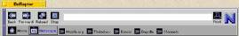

'default',
);
require_once "{$config['file_root']}/includes/header.inc.php"
?>
Mozilla on BeOS - Screenshots
M17+ code base on BeOS
[ 10.04.2000 ]
M17+ code base on BeOS
[ 10.04.2000 ]
 M11 code base on BeOS
M11 code base on BeOS
[ 11.22.99 ]
M7 code base on BeOS
[ 06.21.99 ]
www.be.com
[ 06.04.99 ]
www.beoscentral.com
[ 06.04.99 ]
www.mozilla.org
[ 06.04.99 ]

apprunner...
[ 05.22.99 ]
www.amiga.com
[ 03.08.99 ]
www.mozilla.org
[ 03.08.99 ]
www.x-files.com
[ 03.08.99 ]
 #1
#1
[ 01.13.99 ]
back to Mozilla on Beos ...

 #1
#1